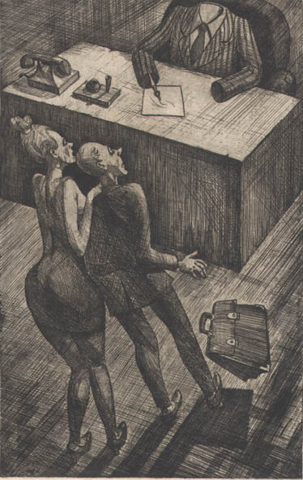

Беспокойный день
Проклятие служащих Зрелищной комиссии и исчезновение костюма Прохора Петровича
Краткое содержание главы
Утро пятницы принесло Москве новые чудеса, еще более нелепые и пугающие. В Театре Варьете пропала вся администрация, а в Зрелищной комиссии в Ваганьковском переулке сам председатель Прохор Петрович бесследно испарился из собственного кабинета — оставив вместо себя в кресле пустой серый костюм, который продолжал деловито подписывать резолюции и проводить совещания.
А в филиале комиссии в Настасьинском переулке весь аппарат сотрудников — от курьера до бухгалтера — внезапно, против собственной воли, запел стройным хором «Славное море — священный Байкал» и никак не мог остановиться, так что всех певцов пришлось вывозить на грузовиках к профессору Стравинскому.
Утром в пятницу, то есть на другой день после проклятого сеанса, весь наличный состав служащих Варьете – бухгалтер Василий Степанович Ласточкин, два счетовода, три машинистки, обе кассирши, курьеры, капельдинеры и уборщицы, – словом, все, кто был в наличности, не находились при деле на своих местах, а все сидели на подоконниках окон, выходящих на Садовую, и смотрели на то, что делается под стеною Варьете. Под этой стеной в два ряда лепилась многотысячная очередь, хвост которой находился на Кудринской площади. В голове этой очереди стояло примерно два десятка хорошо известных в театральной Москве барышников.
Очередь держала себя очень взволнованно, привлекала внимание струившихся мимо граждан и занималась обсуждением зажигательных рассказов о вчерашнем невиданном сеансе черной магии. Эти же рассказы привели в величайшее смущение бухгалтера Василия Степановича, который накануне на спектакле не был. Капельдинеры рассказывали бог знает что, в том числе, как после, окончания знаменитого сеанса некоторые гражданки в неприличном виде бегали по улице, и прочее в том же роде. Скромный и тихий Василий Степанович только моргал глазами, слушая россказни обо всех этих чудесах, и решительно не знал, что ему предпринять, а между тем предпринимать нужно было что-то, и именно ему, так как он теперь остался старшим во всей команде Варьете.
К десяти часам утра очередь жаждущих билетов до того вспухла, что о ней дошли слухи до милиции, и с удивительной быстротой были присланы как пешие, так и конные наряды, которые эту очередь и привели в некоторый порядок. Однако и стоящая в порядке змея длиною в километр сама по себе уже представляла великий соблазн и приводила граждан на Садовой в полное изумление.
Это было снаружи, а внутри Варьете тоже было очень неладно. С самого раннего утра начали звонить и звонили непрерывно телефоны в кабинете Лиходеева, в кабинете Римского, в бухгалтерии, в кассе и в кабинете Варенухи. Василий Степанович сперва отвечал что-то, отвечала и кассирша, бормотали что-то в телефон капельдинеры, а потом и вовсе перестали отвечать, потому что на вопросы, где Лиходеев, Варенуха, Римский, отвечать было решительно нечего. Сперва пробовали отделаться словами «Лиходеев на квартире», а из города отвечали, что звонили на квартиру и что квартира говорит, что Лиходеев в Варьете.
Позвонила взволнованная дама, стала требовать Римского, ей посоветовали позвонить к жене его, на что трубка, зарыдав, ответила, что она и есть жена и что Римского нигде нет. Начиналась какая-то чепуха. Уборщица уже всем рассказала, что, явившись в кабинет финдиректора убирать, увидела, что дверь настежь, лампы горят, окно в сад разбито, кресло валяется на полу и никого нету.
В одиннадцатом часу ворвалась в Варьете мадам Римская. Она рыдала и заламывала руки. Василий Степанович совершенно растерялся и не знал, что ей посоветовать. А в половине одиннадцатого явилась милиция. Первый же и совершенно резонный ее вопрос был:
– Что у вас тут происходит, граждане? В чем дело?
Команда отступила, выставив вперед бледного и взволнованного Василия Степановича. Пришлось называть вещи своими именами и признаться в том, что администрация Варьете, в лице директора, финдиректора и администратора, пропала и находится неизвестно где, что конферансье после вчерашнего сеанса был отвезен в психиатрическую лечебницу и что, коротко говоря, этот вчерашний сеанс был прямо скандальным сеансом.
Рыдающую мадам Римскую, сколько можно успокоив, отправили домой и более всего заинтересовались рассказом уборщицы о том, в каком виде был найден кабинет финдиректора. Служащих попросили отправиться по своим местам и заняться делом, и через короткое время в здании Варьете появилось следствие в сопровождении остроухой, мускулистой, цвета папиросного пепла собаки с чрезвычайно умными глазами. Среди служащих Варьете тотчас разнеслось шушуканье о том, что пес – не кто другой, как знаменитый Тузбубен. И точно, это был он. Поведение его изумило всех. Лишь только Тузбубен вбежал в кабинет финдиректора, он зарычал, оскалив чудовищные желтоватые клыки, затем лег на брюхо и с каким-то выражением тоски и в то же время ярости в глазах пополз к разбитому окну. Преодолев свой страх, он вдруг вскочил на подоконник и, задрав острую морду вверх, дико и злобно завыл. Он не хотел уходить с окна, рычал, и вздрагивал, и порывался спрыгнуть вниз.
Пса вывели из кабинета и пустили его в вестибюль, оттуда он вышел через парадный вход на улицу и привел следовавших за ним к таксомоторной стоянке. Возле нее он след, по которому шел, потерял. После этого Тузабубен увезли.
Следствие расположилось в кабинете Варенухи, куда и стало по очереди вызывать тех служащих Варьете, которые были свидетелями вчерашних происшествий во время сеанса. Нужно сказать, что следствию на каждом шагу приходилось преодолевать непредвиденные трудности. Ниточка то и дело рвалась в руках.
Афиши-то были? Были. Но за ночь их заклеили новыми, и теперь ни одной нет, хоть убей. Откуда взялся этот маг-то самый? А кто ж его знает. Стало быть, с ним заключали договор?
– Надо полагать, – отвечал взволнованный Василий Степанович.
– А ежели заключали, так он должен был пройти через бухгалтерию?
– Всенепременно, – отвечал, волнуясь, Василий Степанович.
– Так где же он?
– Нету, – отвечал бухгалтер, все более бледнея и разводя руками. И действительно, ни в папках бухгалтерии, ни у финдиректора, ни у Лиходеева, ни у Варенухи никаких следов договора нет.
Как фамилия-то этого мага? Василий Степанович не знает, он не был вчера на сеансе. Капельдинеры не знают, билетная кассирша морщила лоб, морщила, думала, думала, наконец сказала:
– Во... Кажись, Воланд.
А может быть, и не Воланд? Может быть, и не Воланд, может быть, Фаланд.
Выяснилось, что в бюро иностранцев ни о каком Воланде, а равно также и Фаланде, маге, ровно ничего не слыхали.
Курьер Карпов сообщил, что будто бы этот самый маг остановился на квартире у Лиходеева. На квартире, конечно, тотчас побывали. Никакого мага там не оказалось. Самого Лиходеева тоже нет. Домработницы Груни нету, и куда она девалась, никто не знает. Председателя правления Никанора Ивановича нету, Пролежнева нету!
Выходило что-то совершенно несусветное: пропала вся головка администрации, вчера был странный скандальный сеанс, а кто его проводил и по чьему наущению – неизвестно.
А дело тем временем шло к полудню, когда должна была открыться касса. Но об этом, конечно, не могло быть и разговора! На дверях Варьете тут же был вывешен громадный кусок картона с надписью: «Сегодняшний спектакль отменяется». В очереди началось волнение, начиная с головы ее, но, поволновавшись, она все-таки стала разрушаться, и через час примерно от нее на Садовой не осталось и следа. Следствие отбыло для того, чтобы продолжать свою работу в другом месте, служащих отпустили, оставив только дежурных, и двери Варьете заперли.
Бухгалтеру Василию Степановичу предстояло срочно выполнить две задачи. Во-первых, съездить в комиссию зрелищ и увеселений облегченного типа с докладом о вчерашних происшествиях, а во-вторых, побывать в финзрелищном секторе для того, чтобы сдать вчерашнюю кассу – 21711 рублей.
Аккуратный и исполнительный Василий Степанович упаковал деньги в газетную бумагу, бечевкой перекрестил пакет, уложил его в портфель и, прекрасно зная инструкцию, направился, конечно, не к автобусу или трамваю, а к таксомоторной стоянке.
Лишь только шоферы трех машин увидели пассажира, спешашего на стоянку с туго набитым портфелем, как все трое из-под носа у него уехали пустыми, почему-то при этом злобно оглядываясь.
Пораженный этим обстоятельством бухгалтер долгое время стоял столбом, соображая, что бы это значило.
Минуты через три подкатила пустая машина, и лицо шофера сразу перекосилось, лишь только он увидел пассажира.
– Свободна машина? – изумленно кашлянув, спросил Василий Степанович.
– Деньги покажите, – со злобой ответил шофер, не глядя на пассажира.
Все более поражаясь, бухгалтер, зажав драгоценный портфель под мышкой, вытащил из бумажника червонец и показал его шоферу.
– Не поеду! – кратко сказал тот.
– Я извиняюсь... – начал было бухгалтер, но шофер его перебил:
– Трешки есть?
Совершенно сбитый с толку бухгалтер вынул из бумажника две трешки и показал шоферу.
– Садитесь, – крикнул тот и хлопнул по флажку счетчика так, что чуть не сломал его. – Поехали.
– Сдачи, что ли, нету? – робко спросил бухгалтер.
– Полный карман сдачи! – заорал шофер, и в зеркальце отразились его наливающиеся кровью глаза, – третий случай со мной сегодня. Да и с другими то же было. Дает какой-то сукин сын червонец, я ему сдачи – четыре пятьдесят... Вылез, сволочь! Минут через пять смотрю: вместо червонца бумажка с нарзанной бутылки! – тут шофер произнес несколько непечатных слов. – Другой – за Зубовской. Червонец. Даю сдачи три рубля. Ушел! Я полез в кошелек, а оттуда пчела – тяп за палец! Ах ты!.. – шофер опять вклеил непечатные слова, – а червонца нету. Вчера в этом Варьете (непечатные слова) какая-то гадюка – фокусник сеанс с червонцами сделал (непечатные слова).
Бухгалтер обомлел, съежился и сделал такой вид, как будто и самое слово «Варьете» он слышит впервые, а сам подумал: «Ну и ну!..»
Приехав куда нужно, расплатившись благополучно, бухгалтер вошел в здание и устремился по коридору туда, где находился кабинет заведующего, и уже по дороге понял, что попал не вовремя. Какая-то суматоха царила в канцелярии зрелищной комиссии. Мимо бухгалтера пробежала курьерша со сбившимся на затылок платочком и вытаращенными глазами.
– Нету, нету, нету, милые мои! – кричала она, обращаясь неизвестно к кому, – пиджак и штаны тут, а в пиджаке ничего нету!
Она скрылась в какой-то двери, и тут же за ней послышались звуки битья посуды. Из секретарской комнаты выбежал знакомый бухгалтеру заведующий первым сектором комиссии, но был в таком состоянии, что бухгалтера не узнал, и скрылся бесследно.
Потрясенный всем этим бухгалтер дошел до секретарской комнаты, являвшейся преддверием кабинета председателя комиссии, и здесь окончательно поразился.
Из-за закрытой двери кабинета доносился грозный голос, несомненно пренадлежащий Прохору Петровичу – председателю комиссии. «Распекает, что ли, кого?» – подумал смятенный бухгалтер и, оглянувшись, увидел другое: в кожаном кресле, закинув голову на спинку, безудержно рыдая, с мокрым платком в руке, лежала, вытянув ноги почти до середины секретарской, личный секретарь Прохора Петровича – красавица Анна Ричардовна.
Весь подбородок Анны Ричардовна был вымазан губной помадой, а по персиковым щекам ползли с ресниц потоки раскисшей краски.
Увидев, что кто-то вошел, Анна Ричардовна вскочила, кинулась к бухгалтеру, вцепилась в лацканы его пиджака, стала трясти бухгалтера и кричать:
– Слава богу! Нашелся хоть один храбрый! Все разбежались, все предали! Идемте, идемте к нему, я не знаю, что делать! – И, продолжая рыдать, она потащила бухгалтера в кабинет.
Попав в кабинет, бухгалтер первым долгом уронил портфель, и все мысли в его голове перевернулись кверху ногами. И надо сказать, было от чего.

За огромным письменным столом с массивной чернильницей сидел пустой костюм и не обмакнутым в чернила сухим пером водил по бумаге. Костюм был при галстуке, из кармашка костюма торчало самопишущее перо, но над воротником не было ни шеи, ни головы, равно как из манжет не выглядывали кисти рук. Костюм был погружен в работу и совершенно не замечал той кутерьмы, что царила кругом. Услыхав, что кто-то вошел, костюм откинулся в кресле, и над воротником прозвучал хорошо знакомый бухгалтеру голос Прохора Петровича:
– В чем дело? Ведь на дверях же написано, что я не принимаю.
Красавица секретарь взвизгнула и, ломая руки, вскричала:
– Вы видите? Видите?! Нету его! Нету! Верните его, верните!
Тут в дверь кабинета кто-то сунулся, охнул и вылетел вон. Бухгалтер почувствовал, что ноги его задрожали, и сел на краешек стула, но не забыл поднять портфель. Анна Ричардовна прыгала вокруг бухгалтера, терзая его пиджак, и вскрикивала:
– Я всегда, всегда останавливала его, когда он чертыхался! Вот и дочертыхался, – тут красавица подбежала к письменному столу и музыкальным нежным голосом, немного гнусавым после плача, воскликнула:
– Проша! где вы?
– Кто вам тут «Проша»? – осведомился надменно костюм, еще глубже заваливаясь в кресле.
– Не узнает! Меня не узнает! Вы понимаете? – взрыдала секретарь.
– Попрошу не рыдать в кабинете! – уже злясь, сказал вспыльчивый костюм в полоску и рукавом подтянул к себе свежую пачку бумаг, с явной целью поставить на них резолюцию.
– Нет, не могу видеть этого, нет, не могу! – закричала Анна Ричардовна и выбежала в секретарскую, а за нею как пуля вылетел и бухгалтер.
– Вообразите, сижу, – рассказывала, трясясь от волнения, Анна Ричардовна, снова вцепившись в рукав бухгалтера, – и входит кот. Черный, здоровый, как бегемот. Я, конечно, кричу ему «брысь!». Он – вон, а вместо него входит толстяк, тоже с какой-то кошачьей мордой, и говорит: "«Это что же вы, гражданка, посетителям »брысь« кричите?» И прямо шасть к Прохору Петровичу, я, конечно, за ним, кричу: «Вы с ума сошли?» А он, наглец, прямо к Прохору Петровичу и садится против него в кресло! Ну, тот... Он – добрейшей души человек, но нервный. Вспылил! Не спорю. Нервозный человек, работает как вол, – вспылил. «Вы чего, говорит, без доклада влезаете?» А тот нахал, вообразите, развалился в кресле и говорит, улыбаясь: «А я, говорит, с вами по дельцу пришел потолковать». Прохор Петрович вспылил опять-таки: «Я занят!» А тот, подумайте только, отвечает: «Ничем вы не заняты...» А? Ну, тут уж, конечно, терпение Прохора Петровича лопнуло, и он вскричал: «Да что ж это такое? Вывести его вон, черти б меня взяли!» А тот, вообразите, улыбнулся и говорит: «Черти чтоб взяли? А что ж, это можно!» И, трах, я не успела вскрикнуть, смотрю: нету этого с кошачьей мордой и си... сидит... костюм... Геее! – распялив совершенно потерявший всякие очертания рот, завыла Анна Ричардовна.
Подавившись рыданием, она перевела дух, но понесла что-то уж совсем несообразное:
– И пишет, пишет, пишет! С ума сойти! По телефону говорит! Костюм! Все разбежались, как зайцы!
Бухгалтер только стоял и трясся. Но тут судьба его выручила. В секретарскую спокойной деловой походкой входила милиция в составе двух человек. Увидев их, красавица зарыдала еще пуще, тыча рукою в дверь кабинета.
– Давайте не будем рыдать, гражданка, – спокойно сказал первый, а бухгалтер, чувствуя, что он здесь совершенно лишний, выскочил из секретарской и через минуту был уже на свежем воздухе. В голове у него был какой-то сквозняк, гудело, как в трубе, и в этом гудении слышались клочки капельдинерских рассказов о вчерашнем коте, который принимал участие в сеансе. «Э-ге-ге? Да уж не наш ли это котик?»
Не добившись толку в комиссии, добросовестный Василий Степанович решил побывать в филиале ее, помещавшемся в Ваганьковском переулке. И чтобы успокоить себя немного, проделал путь до филиала пешком.
Городской зрелищный филиал помещался в облупленном от времени особняке в глубине двора и знаменит был своими порфировыми колоннами в вестибюле.
Но не колонны поражали в этот день посетителей филиала, а то, что происходило под ними.
Несколько посетителей стояли в оцепенении и глядели на плачущую барышню, сидевшую за столиком, на котором лежала специальная зрелищная литература, продаваемая барышней. В данный момент барышня никому ничего не предлагала из этой литературы и на участливые вопросы только отмахивалась, а в это время и сверху, и снизу, и с боков, из всех отделов филиала сыпался телефонный звон, по крайней мере, двадцати надрывавшихся аппаратов.
Поплакав, барышня вдруг вздрогнула, истерически крикнула:
– Вот опять! – и неожиданно запела дрожащим сопрано:
Славное море священный Байкал...
Курьер, показавшийся на лестнице, погрозил кому-то кулаком и запел вместе с барышней незвучным, тусклым баритоном:
Славен корабль, омулевая бочка!..
К голосу курьера присоединились дальние голоса, хор начал разрастаться, и, наконец, песня загремела во всех углах филиала. В ближайшей комнате N 6, где помещался счетно-проверочный отдел, особенно выделялась чья-то мощная с хрипотцой октава. Аккомпанировал хору усиливающийся треск телефонных аппаратов.
Гей, Баргузин... пошевеливай вал!.. – орал курьер на лестнице.
Слезы текли по лицу девицы, она пыталась стиснуть зубы, но рот ее раскрывался сам собою, и она пела на октаву выше курьера:
Молодцу быть недалечко!
Поражало безмолвных посетителей филиала то, что хористы, рассеянные в разных местах, пели очень складно, как будто весь хор стоял, не спуская глаз с невидимого дирижера.
Прохожие в Ваганьковском останавливались у решетки двора, удивляясь веселью, царящему в филиале.
Как только первый куплет пришел к концу, пение стихло внезапно, опять-таки как бы по жезлу дирижера. Курьер тихо выругался и скрылся. Тут открылись парадные двери, и в них появился гражданин в летнем пальто, из-под которого торчали полы белого халата, а с ним милиционер.
– Примите меры, доктор, умоляю, – истерически крикнула девица.
На лестницу выбежал секретарь филиала и, видимо, сгорая от стыда и смущения, заговорил, заикаясь:
– Видите ли, доктор, у нас случай массового какого-то гипноза... Так вот, необходимо... – он не докончил фразы, стал давиться словами и вдруг запел тенором:
Шилка и Нерчинск...
– Дурак! – успела выкрикнуть девица, но не объяснила, кого ругает, а вместо этого вывела насильственную руладу и сама запела про Шилку и Нерчинск.
– Держите себя в руках! Перестаньте петь! – обратился доктор к секретарю.
По всему было видно, что секретарь и сам бы отдал что угодно, чтобы перестать петь, да перестать-то он не мог и вместе с хором донес до слуха прохожих в переулке весть о том, что в дебрях его не тронул прожорливый зверь и пуля стрелков не догнала!
Лишь только куплет кончился, девица первая получила порцию валерианки от врача, а затем он побежал за секретарем к другим – поить и их.
– Простите, гражданочка, – вдруг обратился Василий Степанович к девице, – кот к вам черный не заходил?
– Какой там кот? – в злобе закричала девица, – осел у нас в филиале сидит, осел! – и, прибавив к этому: – Пусть слышит! Я все расскажу, – действительно рассказала о том, что случилось.
Оказалось, что заведующий городским филиалом, «вконец разваливши облегченные развлечения» (по словам девицы), страдал манией организации всякого рода кружков.
– Очки втирал начальству! – орала девица.
В течение года заведующий успел организовать кружок по изучению Лермонтова, шахматно-шашечный, пинг-понга и кружок верховой езды. К лету угрожал организацией кружка гребли на пресных водах и кружка альпинистов.
И вот сегодня, в обеденный перерыв, входит он, заведующий...
– И ведет под руку какого-то сукина сына, – рассказывала девица, – неизвестно откуда взявшегося, в клетчатых брючонках, в треснутом пенсне и... рожа совершенно невозможная!
И тут же, по рассказу девицы, отрекомендовал его всем обедавшим в столовой филиала как видного специалиста по организации хоровых кружков.
Лица будущих альпинистов помрачнели, но заведующий тут же призвал всех к бодрости, а специалист и пошутил, и поострил, и клятвенно заверил, что времени пение берет самую малость, а пользы от этого пения, между прочим, целый вагон.
Ну, конечно, как сообщила девица, первыми выскочили Фанов и Косарчук, известнейшие филиальские подхалимы, и объявили, что записываются. Тут остальные служащие убедились, что пения не миновать, пришлось записываться и им в кружок. Петь решили в обеденном перерыве, так как все остальное время было занято Лермонтовым и шашками. Заведующий, чтобы подать пример, объявил, что у него тенор, и далее все пошло, как в скверном сне. Клетчатый специалист-хормейстер проорал:
– До-ми-соль-до! – вытащил наиболее застенчивых из-за шкафов, где они пытались спастись от пения, Косарчуку сказал, что у него абсолютный слух, заныл, заскулил, просил уважить старого регента-певуна, стучал камертоном по пальцам, умоляя грянуть «Славное море».
Грянули. И славно грянули. Клетчатый, действительно, понимал свое дело. Допели первый куплет. Тут регент извинился, сказал: «Я на минутку» – и... изчез. Думали, что он действительно вернется через минутку. Но прошло и десять минут, а его нету. Радость охватила филиальцев – сбежал.
И вдруг как-то сами собой запели второй куплет, всех повел за собой Косарчук, у которого, может быть, и не было абсолютного слуха, но был довольно приятный высокий тенор. Спели. Регента нету! Двинулись по своим местам, но не успели сесть, как, против своего желания, запели. Остановить, – но не тут-то было. Помолчат минуты три и опять грянут. Помолчат – грянут! Тут сообразили, что беда. Заведующий заперся у себя в кабинете от сраму.
Тут девицын рассказ прервался. Ничего валерианка не помогла.
Через четверть часа к решетке в Ваганьковском подъехали три грузовика, и на них погрузился весь состав филиала во главе с заведующим.
Лишь только первый грузовик, качнувшись в воротах, выехал в переулок, служащие, стоящие на платформе и держащие друг друга за плечи, раскрыли рты, и весь переулок огласился популярной песней. Второй грузовик подхватил, а за ним и третий. Так и поехали. Прохожие, бегущие по своим делам, бросали на грузовики лишь беглый взгляд, ничуть не удивляясь и полагая, что это экскурсия едет за город. Ехали, действительно, за город, но только не на экскурсию, а в клинику профессора Стравинского.
Через полчаса совсем потерявший голову бухгалтер добрался до финзрелищного сектора, надеясь наконец избавиться от казенных денег. Уже ученый опытом, он прежде всего осторожно заглянул в продолговатый зал, где за матовыми стеклами с золотыми надписями сидели служащие. Никаких признаков тревоги или безобразия бухгалтер здесь не обнаружил. Было тихо, как и полагается в приличном учреждении.
Василий Степанович всунул голову в то окошечко, над которым было написано: «Прием сумм», – поздоровался с каким-то незнакомым ему служащим и вежливо попросил приходный ордерок.
– А вам зачем? – спросил служащий в окошечке.
Бухгалтер изумился.
– Хочу сдать сумму. Я из Варьете.
– Одну минутку, – ответил служащий и мгновенно закрыл сеткой дыру в стекле.
«Странно!» – подумал бухгалтер. Изумление его было совершенно естественно. Впервые в жизни он встретился с таким обстоятельством. Всем известно, как трудно получить деньги; к этому всегда могут найтись препятствия. Но в тридцатилетней практике бухгалтера не было случая, чтобы кто-нибудь, будь то юридическое или частное лицо, затруднялся бы принять деньги.
Но наконец сеточка отодвинулась, и бухгалтер опять прильнул к окошечку.
– А у вас много ли? – спросил служащий.
– Двадцать одна тысяча семьсот одиннадцать рублей.
– Ого! – почему-то иронически ответил служащий и протянул бухгалтеру зеленый листок.
Хорошо зная форму, бухгалтер мигом заполнил его и начал развязывать веревочку на пакете. Когда он распаковал свой груз, в глазах у него зарябило, он что-то промычал болезненно.
Перед глазами его замелькали иностранные деньги. Тут были пачки канадских долларов, английских фунтов, голландских гульденов, латвийских лат, эстонских крон...
– Вот он, один из этих штукарей из Варьете, – послышался грозный голос над онемевшим бухгалтером. И тут же Василия Степановича арестовали.